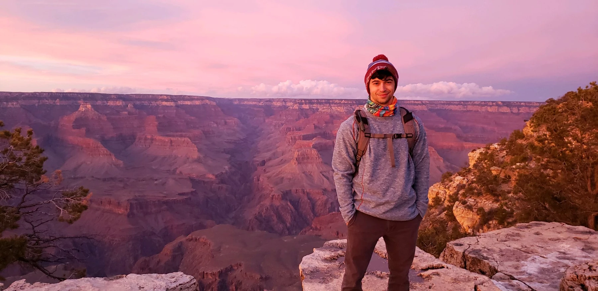

GEOSPATIAL & DATA SCIENCE
Data with a
sense of place.
I’m Sam Shuster. I use GIS, remote sensing, and data science to understand how places change and how people move through them.

PORTFOLIO
Selected work
Maps, research, and dashboards.
BACKGROUND
About me
I’m a data scientist with a background in geography and remote sensing. In my current role, I vet satellite collection requests and help tune how a fleet schedules them. I evaluate whether requests are feasible under collection constraints and sensor availability, then help refine how requests are prepared and scheduled so the fleet can make better use of limited collection opportunities.
Previously, I worked on railroad GIS at Norfolk Southern, analyzed NASA DAYMET precipitation data, and contributed to community mapping at the University of Georgia. I earned a B.S. in Geography and a GIS certificate from UGA in 2021.
Download résumé (PDF)Technical expertise
- Satellite collection planningOperational task vetting, sensor availability and collection feasibility, scheduling trade-offs, and request workflow optimization.
- Data science & machine learningFeature engineering, model evaluation, gradient-boosted trees, and model interpretation with SHAP. Python, scikit-learn, and SQL.
- Geospatial data engineering & analysisSpatial joins, geostatistics, and linear referencing. Geoprocessing automation with ArcPy and enterprise geodatabase workflows.
- Remote sensingLand-use and land-cover classification, change analysis over time, and analysis of gridded climate data.
- Agentic AI workflowsI use AI agents to support research, coding, and debugging, and review their outputs before incorporating them into my work.